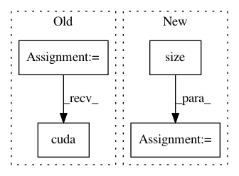

988ee51b15466231e9770f46dcb4d221866322a7,OpenNMT/onmt/Translator.py,Translator,__init__,#Translator#,7
Before Change
self.tt = torch.cuda if opt.cuda else torch
checkpoint = torch.load(opt.model)
self.model = checkpoint["model"]
self.model.eval()
if opt.cuda:
self.model.cuda()
else:
self.model.cpu()
self.src_dict = checkpoint["dicts"]["src"]
After Change
decoder = onmt.Models.Decoder(model_opt, self.tgt_dict)
model = onmt.Models.NMTModel(encoder, decoder)
generator = nn.Sequential(
nn.Linear(model_opt.rnn_size, self.tgt_dict.size()),
nn.LogSoftmax())
model.load_state_dict(checkpoint["model"])
generator.load_state_dict(checkpoint["generator"])
In pattern: SUPERPATTERN
Frequency: 3
Non-data size: 4
Instances
Project Name: pytorch/examples
Commit Name: 988ee51b15466231e9770f46dcb4d221866322a7
Time: 2017-03-14
Author: bryan.mccann.is@gmail.com
File Name: OpenNMT/onmt/Translator.py
Class Name: Translator
Method Name: __init__
Project Name: Zhaoyi-Yan/Shift-Net_pytorch
Commit Name: bcbef3267f372186f457b9c22feec249bd85b2f6
Time: 2018-12-14
Author: yanzhaoyi@outlook.com
File Name: util/util.py
Class Name:
Method Name: cal_feat_mask
Project Name: jadore801120/attention-is-all-you-need-pytorch
Commit Name: bed0a0ae26451c9897cf1ee0f7302e42eba9b42c
Time: 2018-08-23
Author: yhhuang@nlg.csie.ntu.edu.tw
File Name: transformer/Models.py
Class Name:
Method Name: get_attn_subsequent_mask